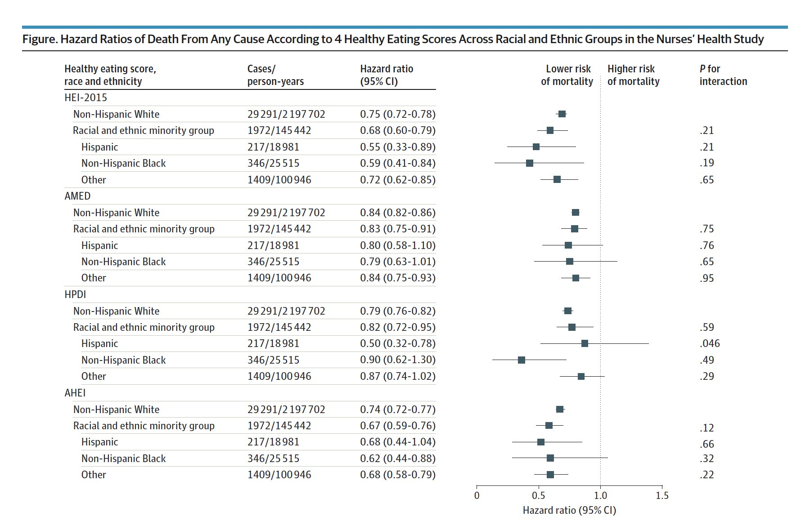
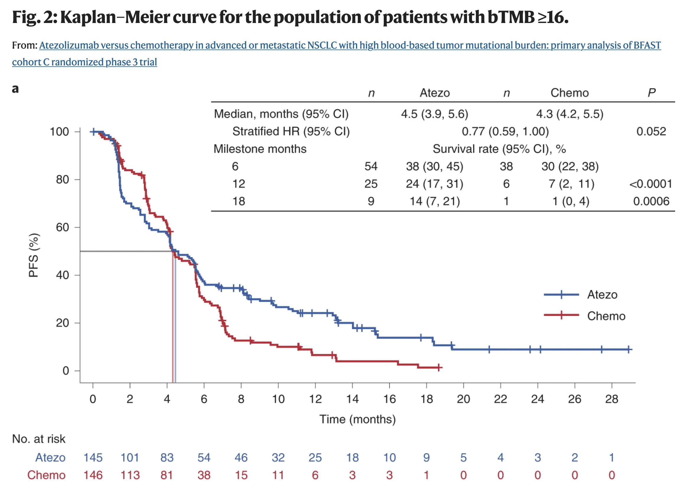
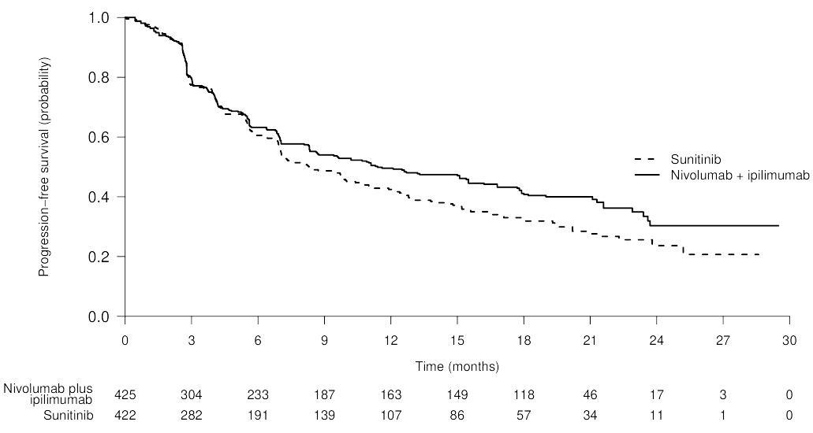

Survival
Misc
- Model for estimating the time until a particular event occurs
- e.g. death of a patient being treated for a disease, failure of an engine part in a vehicle
- Prediction models for survival outcomes are important for clinicians who wish to estimate a patient’s risk (i.e. probability) of experiencing a future outcome. The term ‘survival’ outcome is used to indicate any prognostic or time-to-event outcome, such as death, progression, or recurrence of disease. Such risk estimates for future events can support shared decision making for interventions in high-risk patients, help manage the expectations of patients, or stratify patients by disease severity for inclusion in trials.1 For example, a prediction model for persistent pain after breast cancer surgery might be used to identify high risk patients for intervention studies
- Outcome variable: Time until event occurs
- Also see
- Decision Intelligence, Decision Curves >> Decision Curve Analysis (DCA) >>Misc >> Notes from >> Tutorial
- The tutorial has a survival model section
- Decision Intelligence, Decision Curves >> Decision Curve Analysis (DCA) >>Misc >> Notes from >> Tutorial
- Packages
- CRAN Task View
- {survival}
- {censored} - {tidymodels} for censored and survival modelling
- ML and regression models from partykit, glmnet, aorsf, and survival
- Case Study: How long until building complaints are dispositioned?
- {quantreg} - Quantile Survival Regression
- {msm} - Multi-State Models
- Vignette
- See Multistate Models for Medical Applications
- Tutorial using a heart transplant dataset
- Standard survival models only directly model two states: alive and dead. Multi-state models enable directly modeling disease progression where patients are observed to be in various states of health or disease at random intervals, but for which, except for death, the times of entering or leaving states are unknown.
- Multi-state models easily accommodate interval censored intermediate states while making the usual assumption that death times are known but may be right censored.
- {grf} - Generalized Random Forest; Causal forest with time-to-event data
- {partykit} - Conditional inference trees; Model-based recursive partitioning trees; can be used with {survival} to create random survival forests
- {bonsai}: tidymodels, partykit conditional trees, forests; successor to treesnip — Model Wrappers for Tree-Based Models
- {aorsf} - Optimized software to fit, interpret, and make predictions with oblique random survival forests (ORSFs)
- {{sklearn}} - Random Survival Forests, Survival Support Vector Machine
- {rmstbart} - Prognostic model that directly targets the RMST (See Terms) as a function of baseline covariates. The interpretation of each estimated RMST is transparent and does not require a proportional hazards assumption plus additional modeling of a baseline hazard function.
- {survAH} - Performs two-sample comparisons based on average hazard with survival weight (AHSW). (See Terms)
- Notes from
- Why not use a standard regression model?
- Units that “survive” until the end of the study will have a censored survival time.
- i.e. We won’t have an observed survival time for these units because they survive for an unknown time after the study is completed.
- We don’t want to discard these units though, as they still have useful information.
- Units that “survive” until the end of the study will have a censored survival time.
- Sample Size
- Models
- Kaplan Meier model (i.e. K-M survival curve)
- Often used as a baseline in survival analysis
- Can not be used to compare risk between groups and compute metrics like the hazard ratio
- Exponential model, the Weibull model, Cox Proportional-Hazards, Log-logistic and the Accelerated Failure Time (AFT)
- Multi-State Models
- Hazard rates and Cumulative Hazard rates are typical quantities of interest
- Kaplan Meier model (i.e. K-M survival curve)
- Log-Rank Test (aka Mantel-Cox test) - tests if two groups survival curves are different
Non-Parametric; a special case with one binary X
The intuition behind the test is that if the two groups have different hazard rates, the two survival curves (so their slopes) will differ.
Compares the observed number of events in each group to what would be expected if the survival curves were identical (i.e., if the null hypothesis were true).
Example
library(survival) dat <- data.frame( group = c(rep(1, 6), rep(2, 6)), time = c(4.1, 7.8, 10, 10, 12.3, 17.2, 9.7, 10, 11.1, 13.1, 19.7, 24.1), event = c(1, 0, 1, 1, 0, 1, 1, 1, 0, 0, 1, 0) ) dat ## group time event ## 1 1 4.1 1 ## 2 1 7.8 0 ## 3 1 10.0 1 ## 4 1 10.0 1 ## 5 1 12.3 0 ## 6 1 17.2 1 ## 7 2 9.7 1 ## 8 2 10.0 1 ## 9 2 11.1 0 ## 10 2 13.1 0 ## 11 2 19.7 1 ## 12 2 24.1 0 survdiff(Surv(time, event) ~ group, data = dat ) ## N Observed Expected (O-E)^2/E (O-E)^2/V ## group=1 6 4 2.57 0.800 1.62 ## group=2 6 3 4.43 0.463 1.62 ## ## Chisq= 1.6 on 1 degrees of freedom, p= 0.2 # plot curves with pval from test fit <- survfit(Surv(time, event) ~ group, data = dat) ggsurvplot(fit, pval = TRUE, pval.method = TRUE )- pval > 0.05, so there isn’t enough evidence to that they’re different.
Terms
Average Hazard With Survival Weight (AH) aka Censoring-Free Incidence Rate (CFIR): Alternative to RMST that’s based on a statistical measure called person-time incidence rate, which factors in the period that patients are potentially tracked in a clinical trial. (See vignette for {survAH} an example and further details)
“If you follow 100 patients for a year — which would be 100 years of person-time — we divide that into the number of times we would observe an event such as a patient’s death or cancer recurrence over that period. We can calculate this for each group of patients in the trial with the effect of lost-to-follow-up being removed.”
- Person-Time Incidence Rate is defined by the ratio of the total number of observed events and the total person-time of exposure.
AH-based tests can be more powerful than the log-rank test and the standard RMST-based tests in detecting delayed treatment effects.
Formula
\[ \hat{\eta}(\tau) =\frac{1-\hat{S}(\tau)}{\int_0^\tau \hat{S}(t)dt} = \frac{\mathbb{E}[I(T \le \tau)]}{\mathbb{E}[T\wedge \tau]} \]
- \(\hat S(\tau)\) is the Kaplan-Meier estimator
- Last Term: The ratio of the expected total number of events we observe by \(\tau\) and the expected total observation time by \(\tau\) when there is no censoring until \(\tau\).
- Difference in AH: \(\hat \eta_1 - \hat \eta_0\)
- Ratio of AH: \(\frac{\hat \eta_1}{\hat \eta_0}\)
Long-Term Average Hazard
\[ \hat{\eta}_k(\tau_1, \tau_2) = \frac{\hat S_k(\tau_2) + \hat S_k(\tau_1)}{\int_0^{\tau_2} \hat{S}(t)dt - \int_0^{\tau_1} \hat{S}(t)dt} = \frac{\mathbb{E}[I(\tau_1 \lt T \le \tau_2)]}{\mathbb{E}[T\wedge \tau_2] - \mathbb{E}[T\wedge \tau_1]} \]Last Term: The numerator is the probability of having an event between \((\tau_1,\tau_2)\), and the denominator is the expected time of being alive between \((\tau_1,\tau_2)\).
- Thus, \(\eta_k (\tau_1,\tau_2)\) can be interpreted as an average intensity (think rate) of having an event over the time window \((\tau_1,\tau_2)\).
Paper shows this metric having more power than AH or LT-RMST for delayed treatment effect situations such as immunotherapy trials.
Censoring Time (C): Time at which censoring occurs
- For each unit, we observe Survival Time (T) or C: \(Y = \min(T, C)\)
- Right Censoring:: Occurs when the event has happened after the enrollment (but the time is unknown).
- The patient does not experience the event for the whole duration of the study.
- The patient withdraws from the study.
- The patient is lost to follow-up.
- Left Censoring: Occurs when the event has happened before the enrollment (but the time is unknown).
- Interval Censoring: Individuals are not constantly monitored and the only available information is that the event of interest occurred between two observed timepoints.
Competing Risks - A situation where an event of interest (the primary event) can be precluded or hindered by the occurrence of a different event (a competing event).
- There are multiple possible events that can terminate the observation period, and the occurrence of one event prevents the occurrence of the others.
- The primary event of interest and the competing events are mutually exclusive, meaning that only one event can occur for each individual in the study.
- Specialized statistical methods are used, such as the cause-specific hazard function, the cumulative incidence function, and the subdistribution hazard model.
- Example: In a study of patient survival after a certain medical treatment, the event of interest might be death due to the disease being treated. However, some patients may die from other causes (e.g., an unrelated accident or a different disease) before the event of interest occurs. These other causes of death are considered competing risks because they compete with the event of interest and prevent its observation.
Cumulative hazard function (aka Cumulative Hazard Rates)
- Shows the total accumulated risk of an event occurring at time t
- The area under the hazard function
Hazard Rate (aka Risk Score), \(h(t \;|\; X)\)
- The hazard rate is the probability that a unit with predictors, \(X\), will experience an event at time, \(t\), given that the unit has survived just before time, \(t\).
- The formula for the Hazard Rate is the Hazard function.
Hazard Ratio (aka Relative Risk of an event): Risk of an event given category / risk of an event given by reference category
The ratio of two instantaneous event rates
Coefficient of the Cox Proportional Hazards model (e.g. paper)
- \(e^\beta > 1\) (or \(\beta > 0\)) for an increased risk of event (e.g. death).
- \(e^\beta < 1\) (or \(\beta < 0\)) for a reduced risk of event.
- HR of 2 is equivalent to raising the entire survival curve for a control subject to the second power to get the survival curve for an exposed subject
- Example: If a control subject has 5yr survival probability of 0.7 and the exposed:control HR is 2, the exposed subject has a 5yr survival probability of 0.49
- If the HR is 1/2, the exposed subject has a survival curve that is the square root of the control, so \(S(5)\) would be \(\sqrt{0.7} = 0.837\)
Restricted Mean Survival Time (RMST) - The expected survival duration up to a pre-specified truncation time, \(\tau\). It has direct clinical interpretation, which holds regardless of the survival model used in an analysis. Changes in RMST are often cited as an alternative to hazard ratios in the context of treatment comparisons and in survival regression modeling.
- Unlike proportional hazards, the interpretation of change in RMST holds regardless of whether or not a particular survival regression model holds.
- See Restricted Mean Survival Time for Survival Analysis: A Quick Guide for Clinical Researchers
- Statistical comparisons based on the standard RMST provides lower power than the conventional log-rank test when detecting delayed treatment effects (e.g. immunotherapy trials). (paper)
- Solution: Long-Term (aka Windowed) RMST which defines the lower limit of the definite integral at the point where the K-M curves separate, \(\eta\), instead of 0, and keeps the upper limit at \(\tau\).
- Also see LT-AH
Status indicator, \(\delta\)
- \(\delta = 1\), if \(T \le C\) (e.g. unit fails before study ends)
- True survival time is observed
- \(\delta = 0\), if \(T \gt C\) (e.g. unit survives until end of study or has dropped out)
- Censoring time is observed
- \(\delta = 1\), if \(T \le C\) (e.g. unit fails before study ends)
Survival function (aka Survival Rate), \(S(T \lt t)\):
- Outputs the probability of a subject surviving (i.e., not experiencing the event) beyond time t
- Monotonically decreasing (i.e. level or decreasing)
- Baseline survival curve illustrates the survival function when all the covariates are set to their median value
Survival Time (T) (aka Death, Failure Time, Event Time): Time at which the event occurs
{kind=link}
Kaplan-Meir
Misc
- Useful for validation of Proportional Hazards assumption. When lines cross the assumption, hazards are found to be non-proportional.
- Harrell RMS (Ch. 20.3):
- For external validation: at least 200 events
- Need 184 subjects with an event, or censored late, to estimate to within a margin of error of 0.1 everywhere, at the 0.95 confidence level
Order event times (\(T\)) of units from smallest to largest, \(t_1 \lt .... \lt t_k\)
Calculate probability that a unit survives past event time, \(t_i\), given that they survived up until event time, \(t_i\) (i.e. past \(t_{i-1}\)) (conditional probability)
- e.g. for \(t_1\), it’s \(\frac{(n_1 - d_1)}{n_1}\)
- \(n_1\) is the number of units that have survived at \(t_1\)
- \(d_1\) is the number of units that have experienced the event (e.g. died) at \(t_1\)
- Similar for other \(t\) values
- Median survival time is where the survival probability equals 0.5
- e.g. for \(t_1\), it’s \(\frac{(n_1 - d_1)}{n_1}\)
Survival function
\[ S(t) = \prod_{i\;:\;t_t \le t} \left(1- \frac{d_i}{n_i}\right) \]
- The survival function computes the products of these probabilities resulting in the K-M survival curve
- The product of these conditional probabilities reflects the fact that to survive past event time, \(t\), a unit must have survived all previous event times and the current event time.
Example: 50 patients
.png)
- Dotted lines represent \(95\%\) CI
- Red dots indicate time when patients died (aka event times)
- Median survival time is ~ 13 yrs
Exponential
Assumes that the hazard rate is constant
- i.e. Risk of the event of interest occurring remains the same throughout the period of observation
Survival function
\[ S(t) = e^{-\frac{t}{\lambda}} \]
Hazard function
\[ h(t) = \frac{1}{\lambda} \]
- \(h(t)\) is the constand hazard rate
Estimated parameter: \(\lambda\)
Weibull
Assumes the change in hazard rate is linear.
Survival function
\[ S(t) = e^{-(\frac{t}{\lambda})^\rho} \]
Hazard function
\[ h(t) = \frac{\rho}{\lambda}\cdot \left(\frac{t}{\lambda}\right)^{\rho - 1} \]
Estimated parameters: \(\lambda\) and \(\rho\)
- \(\lambda\) parameter indicates how long it takes for 63.2% of the subjects to experience the event.
- \(\rho\) parameter indicates whether the hazard rate is increasing, decreasing, or constant.
- If \(\rho\) is greater than 1, the hazard rate is constantly increasing.
- If \(\rho\) is less than 1, the hazard rate is constantly decreasing.
Cox’s Proportional Hazards
Multivariable regression model
Allows the hazard rate to fluctuate
Harrell: “under PH assumption and absence of covariate interactions, HR is a good overall effect estimate for binary treatment”
Misc
- Packages
- Sample Size
- Harrell RMS (Ch. 20.3):
- To achieve a Multiplicative Margin of Error (MMOE ) of 1.2 (?) in estimating \(e^{\hat \beta}\) with equal numbers of events in the two groups (balanced, binary treatment variable) and \(\alpha = 0.05 \rightarrow\) requires a total of 462 events
- Harrell RMS (Ch. 20.3):
- Resources
- Test for Differences in Treatment Effects
- From Statistical tests for comparing the associations of multiple exposures with a common outcome in Cox proportional hazard models
- Also, examples show code for relatively complex designs.
- Reminds me of some of the post-hoc ANOVA tests, but for survival models. (See Post-Hoc Analysis, ANOVA >> Diagnostics)
- Paper shows procedure for different exposure (i.e. treatment) types, different numbers of exposures, etc., plus coded examples.
- Procedure:
- Fit separate survival models for each treatment
- Create a long format dataframe where the values of the treatment variables are one column (e.g. exposures) and the names of the treatments are in another (e.g. type)
- Fit survival model where the there’s an interaction between the newly created variables (e.g. exposures and types). There are also other interactions that should be included (see paper).
- When the exposures \(\times\) types interaction coefficient has a p-value \(\lt\) 0.05, it suggests that the difference in the exposure effects was statistically significant.
- From Statistical tests for comparing the associations of multiple exposures with a common outcome in Cox proportional hazard models
- Patient covariate adjustment is a must. (Harrell)
- “Any covariate conditioning is better than none. Estimating unadjusted treatment effects in nonlinear model situations will result in stronger attenuation of the treatment effect (e.g., move an OR towards 1.0) on the average, will get the model wrong, and will not lend itself to understanding the ARR distribution nor provide any basis for treatment interaction/assessment of differential treatment effect.”
- “Regarding ‘get the model wrong’, a good example is that if the treatment effect is constant over time upon covariate adjustment (i.e., the proportional hazards (PH) assumption holds), the unadjusted treatment effect will violate PH.”
- “As an example let there be a large difference in survival time between males and females. Failure to condition on sex will make the analyst see a complex bimodal survival time distribution with unexplained modes, and this can lead to violating PH for treatment. Practical experience has found more studies with PH after covariate adjustment than studies with PH without covariate adjustment.”
Assumptions
- Hazard ratios (ratio of hazard rates or \(e^\beta\) ) between groups/units remain constant over time (aka Proportional Hazards Assumption).
- i.e. No matter how the hazard rates of the subjects change during the period of observation, the hazard rate of one group relative to the other will always stay the same
- Hazard Ratios are independent of time
- Example: Immunotherapy typically violates PH assumptions (post)
- The survival probabilities between the treatment (blue) and the chemo (red) cross at around the 4.2 months
- The distance between the lines should remain somewhat constant throughout the trial in order to adhere to the PH assumptions (1st assumption)
- Also think the lines should be somewhat straight. (2nd assumption)
- Patients in immunotherapy drug trials often experience a period of toxicity, but if they survive this period, they have a much better outcome down the road.
- The survival probabilities between the treatment (blue) and the chemo (red) cross at around the 4.2 months
- Example: Delayed Difference in Immunotherapy Trials
- Lines overlap until around 6 to 7 month then separate showing that the treatment effect is delayed.
- Solution:
- Tests
- Grambsch and Therneau (G&T)
- See Harrell RMS (Ch. 20.6.2)
- If assumptions are violated,
- Gelman says to try and “expand the model, at the very least by adding an interaction.” (post)
- See Harrell RMS (Ch. 20.7)
- Use a different model
- Accelerated Failure Time (AFT) model (See ML >> Gradient Boosting Survival Trees)
- Adjusted Cox PH model with Time-Varying Coefficients
- Must choose a functional form describing how the effect of the treatment changes over time
- Recommended to use AIC criteria to guide one’s choice among a large number of candidates
- Must choose a functional form describing how the effect of the treatment changes over time
- Hazard ratios (ratio of hazard rates or \(e^\beta\) ) between groups/units remain constant over time (aka Proportional Hazards Assumption).
Models event time (T) outcome variable and outputs parameter estimates for treatment (X) effects
- Provides a way to have time-dependent (i.e. repeated measures) explanatory variables (e.g. age, health status, biomarkers)
- Can handle other types of censoring such as left or interval censoring.
- Has extensions such as lasso to handle high dimensional data
- DL and ML models also have versions of this method
Hazard function
\[ h(t|X,L) = h_0(t)\;e^{\beta_1 X +\beta_2 L} \]
- The hazard rate for a unit with exposure, \(X\), and adjustment variable, \(L\), is the product of a baseline hazard, \(h_0(t)\) (corresponding to \(X = 0\) and \(L=0\)) and a factor that depends on \(X\) and \(L\) and the regression parameters, \(\beta_1\) and \(\beta_2\).
- Optimized to yield partial maximum likelihood estimates, \(\hat \beta\).
- Doesn’t require the specification of \(h_0(t)\) which makes the method flexible and robust
Interpretation:
- \(\beta\): Represents the increase in the expected log of the relative hazard for each one unit increase in the predictor, holding other predictors constant.
- Hazard Rate: The risk (probability) of an event given that the participant has survived up to a specific time. (Formula depends on treatment category, see example below.)
- Even though it’s a probability, it actually represents the expected number of events per one unit of time. As a result, the hazard rate in a group can exceed 1.
- Example
- If the hazard rate is \(0.2\) at time \(t\) and the time units are months, then on average, \(0.2\) events are expected per person at risk per month.
- Or the reciprocal, \(1/0.2 = 5\), which is the expected event-free time (5 months) per person at risk.
- Relative Risk (of an event): Risk of an event given category divided by the risk of an event given by reference category
- How many times greater (or less) of a risk of an event given a category compared to the risk of an event given a reference category. (i.e. odds ratio)
- Example
- \(e^\beta = 0.68\) means the change in category from the reference category results in a \((1 - 0.68) = 0.32 = 32\%\) decrease in the hazard on average.
- For a continuous variable (e.g. age), if \(\beta = 0.11149\) and \(e^\beta = 1.118\), then there is an 11.8% increase in the expected hazard relative to a one year increase in age (or the expected hazard is 1.118 times higher in a person who is one year older than another)
- Example: Treatment (\(x\)) = Smoking
- Risk Score (aka Hazard Rate) given by smoking: (\(\boldsymbol{x=1}\)): \(h_0(t)e^{\beta \cdot x} = h_0(t)e^{\beta \cdot 1} = \boldsymbol{h_0(t)e^{\beta}}\)
- Risk Score (aka Base Hazard Rate) given by not smoking: (\(\boldsymbol{x=0}\)): \(h_0(t)e^{\beta \cdot x} = h_0(t)e^{\beta \cdot 0} = \boldsymbol{h_0(t)}\)
- Relative Risk (aka Hazard Ratio) is the risk given by smoking divided by the risk given by not smoking: \(\frac{h_0(t)e^\beta}{h_0(t)} = \boldsymbol{e^\beta}\)
{kind=link}
{kind=link}
ML
Misc
- Split data so partitions have the same censoring distribution.
- The censoring distribution might be obtained from a Kaplan-Meier estimator applied to the data.
- Dynamic AUC is a recommended metric
Random Survival Forests
- The main difference from a standard RF lies in the metric used to assess the quality of a split: log-rank (see Misc) which is typically used when comparing survival curves among two or more groups.
- Packages
- {{sklearn}}
- {aorsf} - Optimized software to fit, interpret, and make predictions with oblique random survival forests (ORSFs)
Instead of using one variable to split the data, use a weighted combination of variables, i.e. \(\text{instead of}\;\; x_1 < \text{cutpoint (left), use}\;\; c_1x_1 + c_2x_2 < \text{cutpoint (right)}\)
Predictions of Standard RF vs Oblique RF
- In the standard rf, the decision boundaries are essentially perpendicular while the oblique rf boundaries are more angular. This should make the oblique model more flexible.
Kaplan-Meir Curves are fit in the leaves of the trees
- Time is on the x-axis and probability of survival on the y-axis
- Example: {aorsf}
From Machine Learning for Risk Prediction using Oblique Random Survival Forests (Video; Slides & Code)
Via package
# equivalent syntaxes fit_orsf <- orsf(data = pbc_orsf, formula = Surv(time + status) ~ . - id) fit_orsf <- orsf(data = pbc_orsf, formula = time + status ~ . - id)- Top model is fit with the typical
survival::coxphsyntax - time: time to event
- status: dummy variable indicating whether event occurred
- id: unit or patient id which is excluded
- Top model is fit with the typical
Via {tidymodels}
library(parsnip) library(censored) # must be version 0.2.0 or higher rf_spec <- rand_forest(trees = 200) %>% set_engine("aorsf") %>% set_mode("censored regression") fit_tidy <- rf_spec %>% parsnip::fit(data = pbc_orsf, formula = Surv(time, status) ~ . - id)Estimated Expected Risk via Partial Dependence (PD)
PD and importance rank for variables
orsf_summarize_uni(fit_orsf, n_variables = 1) ## ## -- bili (VI Rank: 1) ---------------------------- ## ## |---------------- risk ----------------| ## Value Mean Median 25th % 75th % ## <char> <num> <num> <num> <num> ## 0.80 0.2343668 0.1116206 0.04509389 0.3729834 ## 1.4 0.2547884 0.1363122 0.05985486 0.4103148 ## 3.5 0.3698634 0.2862611 0.16196924 0.5533383 ## ## Predicted risk at time t = 1788 for top 1 predictors- Computes expected risk (predicted probability) at different quantiles as a predictor variable varies.
- Value is 3 values of the predictor which are the 25th, 50th, and 75th quantile.
- n_variables says how many “important” variables to look at
- e.g. n_variables = 2 would look at the top 2 variables in terms of variable importance.
- VI Rank: 1 indicates the bili is ranked first in variable importance
- bili: serum bilirubin (mg/dl); continuous predictor variable
- It choses time = 1788 because that’s the median
- Also see Diagnostics, Model Agnostic >> DALEX >> Dataset Level >> Partial Dependence Profiles
- Computes expected risk (predicted probability) at different quantiles as a predictor variable varies.
PD at specified predictor values and time values
pd_by_gender <- orsf_pd_oob(fit_orsf, pred_spec = list(sex = c("m", "f")), pred_horizon = 365 * 1:5) pd_by_gender %>% dplyr::select(pred_horizon, sex, mean) %>% tidyr::pivot_wider(names_from = sex, values_from = mean) %>% dplyr::mutate(ratio = m / f) ## # A tibble: 5 x 4 ## pred_horizon m f ratio ## <dbl> <dbl> <dbl> <dbl> ## 1 365 0.0768 0.0728 1.06 ## 2 730 0.125 0.111 1.13 ## 3 1095 0.230 0.195 1.18 ## 4 1460 0.298 0.251 1.19 ## 5 1825 0.355 0.296 1.20orsf_pd_oob- Computes expected risk using out-of-bag only- Both values (m,f) for sex are specified
- pred_horizon specifies the time values
- Here, time is in days, so these values specify expected risk (predicted probabilities) at years 1 through 5.
- ratio is the risk ratio of males compared to females.
- Others
orsf_pd_inb- Computes expected risk using all training dataorsf_pd_new- Computes expected risk using new data
{kind=link}
{kind=link}
{kind=link}
{kind=link}
Gradient Boosting Survival Trees
- Loss Functions
- Partial likelihood loss of Cox’s proportional hazards model
- Squared regression loss
- Inverse probability of censoring weighted least squares error.
- Allows the model to accelerate or decelerate the time to an event by a constant factor. It is known as the Accelerated Failure Time (AFT). It contrasts with the Cox proportional hazards model where only the features influence the hazard function.
- Packages
- {{sklearn}}
Survival Support Vector Machine
- Predictions cannot be easily related to the standard quantities of survival analysis, that is, the survival function and the cumulative hazard function.
- Packages
- {{sklearn}}
Diagnostics
- Misc
- Notes from How to Evaluate Survival Analysis Models
- Packages
- {survex} - Explainable Machine Learning in Survival Analysis (From Dalex group)
- {yardstick}
- Articles
- Concordance index on the survival time via
concordance_survival() - Brier score on the survival probability and its integrated version via
brier_survival()andbrier_survival_integrated() - ROC curve and the area under the ROC curve on the survival probabilities via
roc_curve_survival()andauc_roc_survival()respectively- Takes survival probability predictions at one or more specific evaluation times and, for each time, computes the ROC curve. To account for censoring, inverse probability of censoring weights (IPCW) are used in the calculations.
- {survAUC} - Has other methods, but the best approach based on other papers seems to be Uno’s IPCW approach.
AUC.uno(Uno et al 2007) - Restricted to random censoring. Uses inverse probability of censoring weighting (IPCW) approach. Simulation studies in later papers have shown good behaviour of the IPCW approach for various censoring scenarios
- {sMSROC} (Vignette) - Uses a two-stages mixed-subjects ROC curve estimator.
- First Stage: Fit a probabilistic model ((logistic regression, proportional hazard Cox regression, etc) for linking the biomarker with the outcome. Predicted probabilities are used for allocating subjects into the positive and the negative groups.
- Second Stage: For each potential threshold, compute both the sensitivity and the specificity values, which can be used to draw the ROC curve.
- AUC with confidence intervals and plots showing evolution of the AUCs across the follow-up time.
- {timeROC} - Functions using the IPCW approach for the Competing Risks setting (also can used for non-competing risks settings). Computationally efficient since it doesn’t require bandwidth selection for smoothing by bootstrapping.
- Confidence intervals of AUCs and tests for comparing AUCs of two rival markers measured on the same subjects.
- Time-dependent Positive Predictive Values (PPV) and Negative Predictive Values (NPV)
- {intcensROC} - AUC Estimation of Interval Censored Survival Data
- ‘Rcpp’ based package is an efficient implementation of the generalized gradient projection method for spline function based constrained maximum likelihood estimator.¯\_(ツ)_/¯
- {cenROC} - Smoothed and a non-smoothed (empirical) ROC for the right and interval censored survival data.
- Includes AUC and optimal cutoff point
- The likelihood-ratio test, Wald test, and score logrank statistics are asymptotically equivalent. For large enough N, they will give similar results. For small N, they may differ somewhat. The Likelihood ratio test has better behavior for small sample sizes, so it is generally preferred.
- Concordance Index (C-Index, Harrell’s C)
Consider a pair of patients \((i, j)\). Intuitively, a higher risk should result in a shorter time to the adverse event. Therefore, if a model predicts a higher risk score for the first patient (\(\eta_i \gt \eta_j\)), we also expect a shorter survival time in comparison with the other patient (\(T_i \lt T_j\)).
Each pair (\(i, j\)) that fulfills this expectation (\(\eta_i \gt \eta_j \\: T_i \lt T_j\) or \(\eta_i \lt \eta_j \\: T_i \gt T_j\)) as concordant pair, and discordant otherwise.
- A high number of concordant pairs is an evidence of the quality of the model, as the predicted higher risks correspond to an effectively shorter survival time compared to lower risks
Formula
\[ \begin{aligned} C &= \frac{\operatorname{Number of Concordant Pairs}}{\operatorname{Number of Comparable Pairs}}\\ &= \frac{\operatorname{Number of Concordant Pairs}}{\operatorname{Number of Concordant Pairs} + \operatorname{Number of Disconcordant Pairs}} \end{aligned} \]
- If both patients \(i\) and \(j\) are censored, we have no information on \(T_i\) and \(T_j\), hence the pair is discarded.
- If only one patient is censored, we keep the pair only if the other patient experienced the event prior to the censoring time. Otherwise, we have no information on which patient might have experienced the event first, and the pair is discarded
Programmatic Formula
\[ C = \frac{\sum_{i,j} I(|T_i \gt T_j) \cdot I(\eta_j \gt \eta_i) \cdot \Delta_j}{\sum_{i,j} I(T_i \gt T_j) \cdot \Delta_j} \]
- Where the variable \(\Delta_j\) indicates whether \(T_j\) has been fully observed (\(\Delta_j = 1\)) or not (\(\Delta_j = 0\)). Therefore, the multiplication by \(\Delta_j\) discards noncomparable pairs, because the smaller survival time is censored (\(\Delta_j = 0\)).
Guidelines
- \(C = 1\): Perfect concordance between risks and event times.
- \(C = 0\): Perfect anti-concordance between risks and event times.
- \(C = 0.5\): Random assignment. The model predicts the relationship between risk and survival time as well as a coin toss.
- Desirable values range between 0.5 and 1.
- The closer to 1, the more the model differentiates between early events (higher risk) and later occurrences (lower risk).
Issues
- The C-index maintains an implicit dependency on time.
- The C-index becomes more biased (upwards) the more the amount of censoring (see Uno’s C below)
- Uno’s C
- ** Preferable to Harrell’s C in the presence of a higher amount of censoring. **
- Variation of Harrell’s C that includes the inverse probability of censoring weighting
- Weights based on the estimated censoring cumulative distribution
- Uses the Kaplan-Meier estimator for the censoring distribution
- So the disribution of censored units should be independent of the covariate variables
- In the paper, Uno showed through simulation this measure is still pretty robust even when the censoring is dependent on the covariates
- So the disribution of censored units should be independent of the covariate variables
- Packages: {survAUC}
- Cumulative/Dynamic AUC
Requires solutions to Censoring (See Terms>> Censoring Time)
- Naive Method: Remove from the sample the censored observations and approximate the cumulative sensitivity and the dynamic specificity through their empirical estimators
- Integrate the information from the censored observations. This is done by various methods. See ROC/AUC packages in Misc for details.
AUC where the False Positive Rates (FPR) and True Positive Rates (TPR) are time-dependent, since a unit is a True Negative until the event then becomes a True Positive
Inverse Probability Censoring Weighting (IPCW) AUC Formula
\[ \widehat{AUC}(t) = \frac{\sum_{i=1}^n \sum_{j=1}^n I(y_j \gt t)\cdot I(y_i \le t)\cdot \hat \omega_i \cdot I(\hat f(\boldsymbol{x}_j) \le \hat f(\boldsymbol{x}_i))}{(\sum_{i=1}^n I(y_i \gt t)) \;\cdot\; (\sum_{i=1}^n I(y_i \le t) \; \hat \omega_i)} \]
- \(\hat f\) are predicted risk scores
- \(\hat \omega\) is the inverse probability of censoring weight (see Uno’s C)
- \(I(y_{i,j} \gt t)\) indicates whether the unit pair’s, \(i\) and \(j\), event time is greater or less the time, \(t\). (I think)